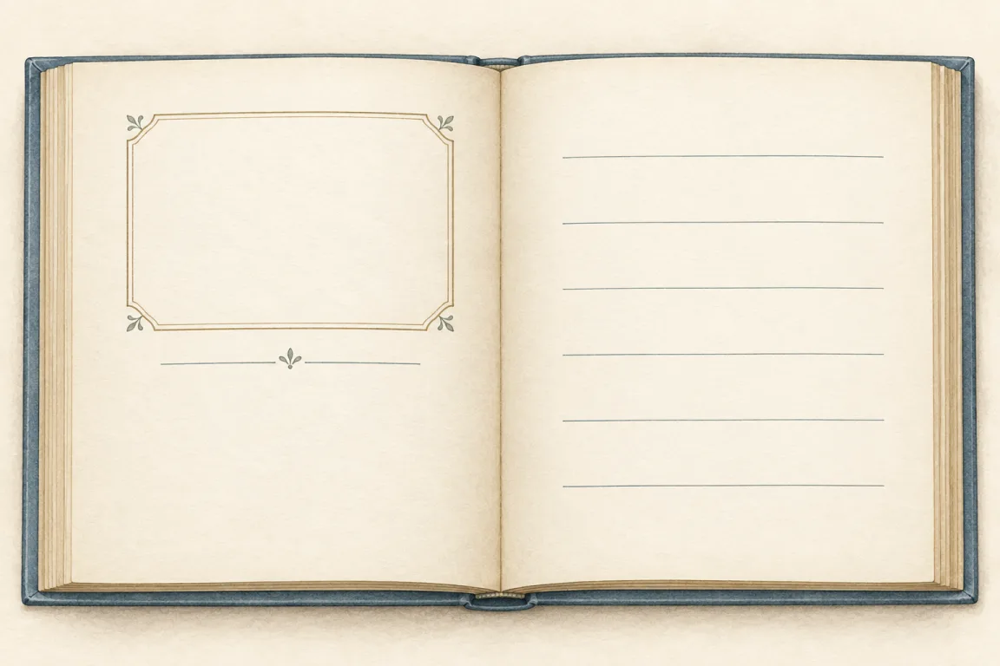

Vyplň zdroj, přidej do seznamu a spravuj bibliografii ve stylu ISO 690 nebo APA 7. Vše zůstává jen v tomto prohlížeči.
Vyber očíslovaný bod na titulní straně nebo v tiráži. Popisky jsou ukázkové; u skutečné knihy mohou být uspořádané jinak.

EVA NOVOTNÁ TAJEMSTVÍ LESA 2. vydání Praha Modrý list 2026 ISBN 978-80-00000-00-0